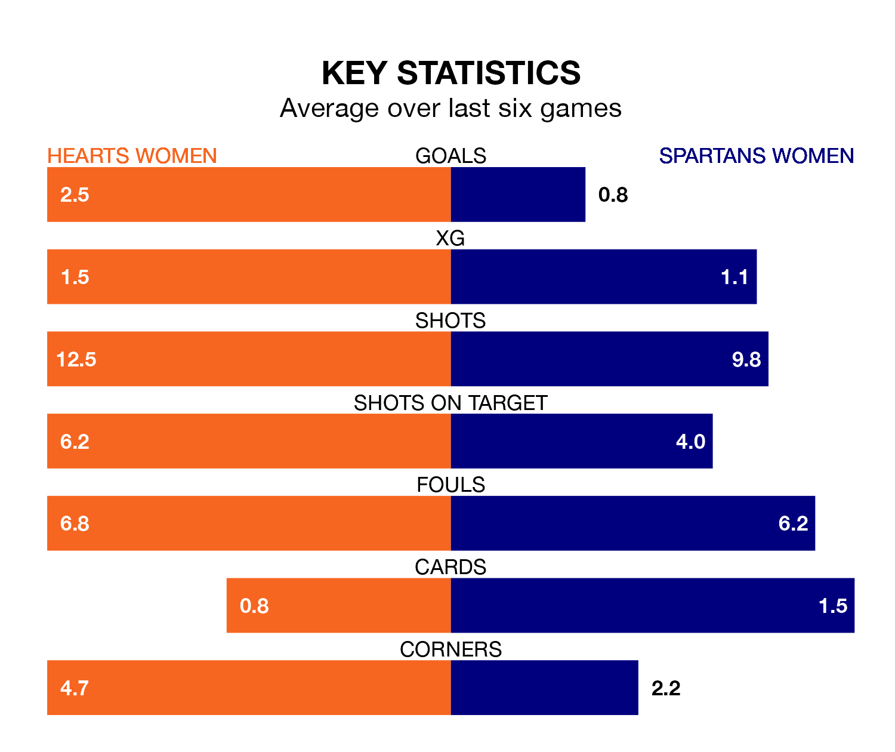

Spartans Women travel to Oriam National Performance Centre looking to secure a first win in 11 SWPL 1 games against Hearts Women on Sunday.
The Spartans have lost eight and drawn two matches since they last earned three points – against Partick Thistle Women on September 13.
They face a Hearts side who have won six and drawn three over that time.
Spartans are 11th in the table after 17 games, of which they have won two and drawn three, earning nine points.
Hearts are six places ahead of the Spartans in fifth, with nine wins and three draws putting them on 30 points.
In the last 10 years, Hearts and Spartans have played each other on 10 occasions. Hearts won two of them, Spartans five, and they drew three times.
On average, Hearts scored 1.2 goals and the Spartans 2.0 in those matches.
Their last meeting was on October 15, when Hearts won 4-3 away.
With 18 goals in 17 games so far this season, the visitors are scoring at below the league average rate with 1.1 goals per game. And they are conceding more than average, letting in 50 goals at a rate of 2.9 per game.
The home side, meanwhile, are above average scorers, with 2.6 goals per game, compared to a league average of 2.2. They have conceded 1.2 goals per game.
In Katie Jayne Lockwood, Hearts have one of the league's sharpest shooters so far this season. She has notched 13 goals in 15 appearances, to sit fifth in the scoring charts.
Her goal rate of one every 99 minutes is much quicker than that of Caley Gibb, Spartans's top scorer with a goal every 199 minutes, and a total of four goals in 13 games.
Hearts's last match was on January 14, a 3-0 win against Motherwell Women, with Addison Handley, Dannielle Collean McGinley and Lockwood getting the goals for Hearts.
Spartans lost 5-1 against Glasgow City Women last time out, also on January 14, with Rebecca Galbraith on the scoresheet.
Updated: 09:18 (UTC), 23/01/24